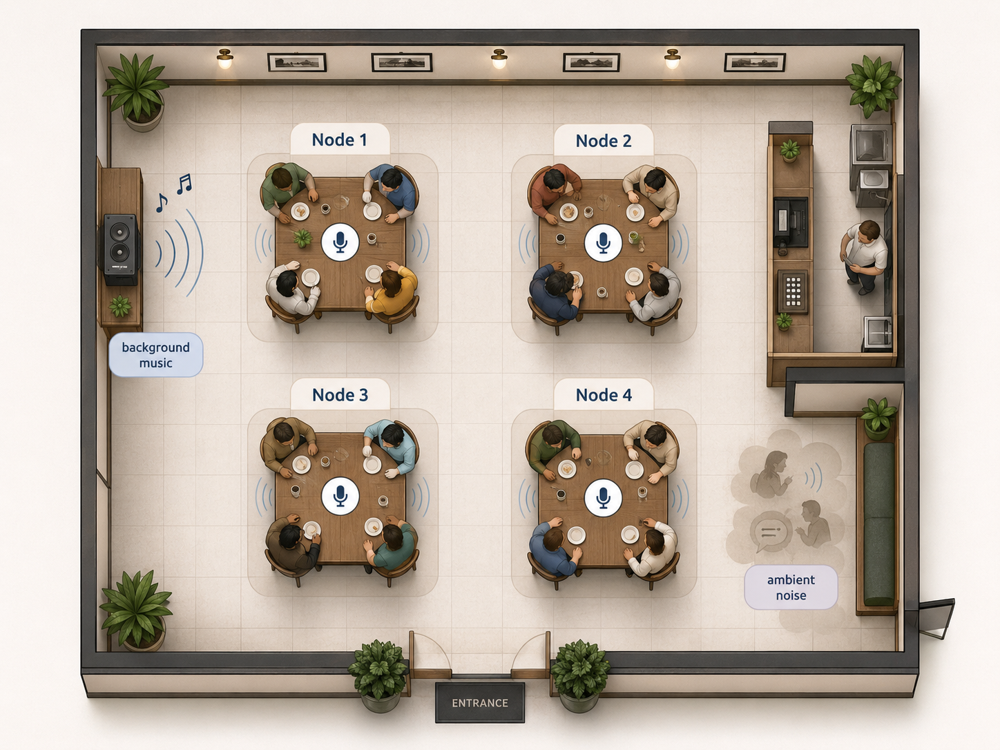
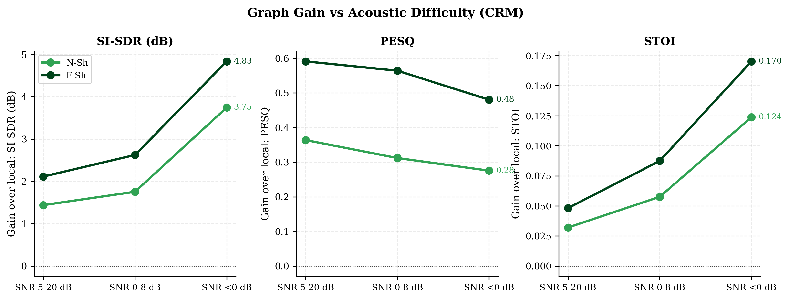
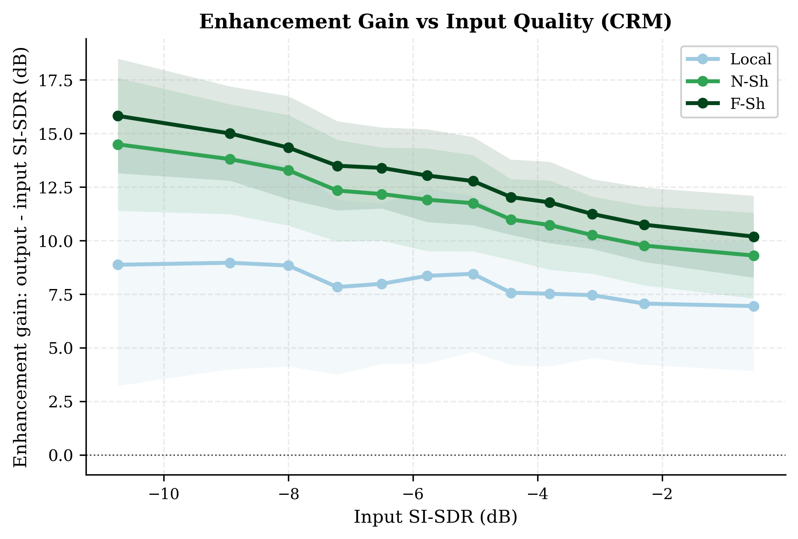
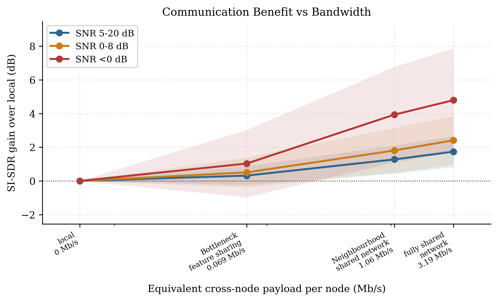
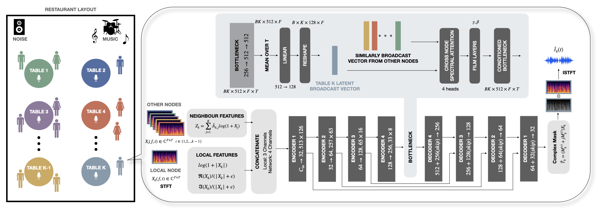

IWAENC 2026 accepted paper demo
Cooperative node-specific speech enhancement in a noisy restaurant
Four table-mounted microphones each keep their local talkers while suppressing speech from other tables, background music, and ambient noise.
Scene 0
Restaurant layout

Select a node to hear what that microphone observes, its clean local target, and the enhanced output from the cooperative model.
Selected node
Node 1
Target
local table speech
Interference
other tables + noise
Output
enhanced local speech
Paper results
Cross-node cooperation helps most in adverse scenes




Reproducibility